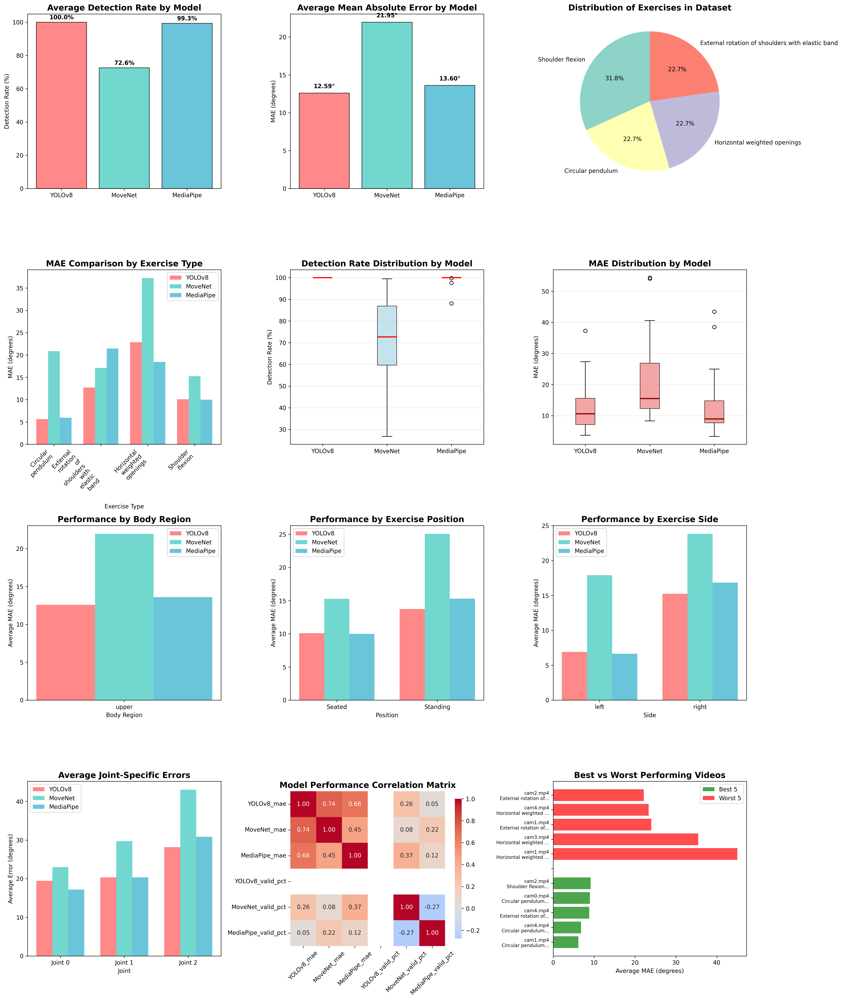

Exploratory Data Analysis & Benchmark Report: UCO Physical Rehabilitation Dataset vs OptiTrack Ground Truth
Angle MAE เฉลี่ยต่ำที่สุด 13.60° (Upper) / 17.46° (Global)
อัตราการตรวจจับพบร่างสมบูรณ์ 100.0% Detection Rate
ครอบคลุม 13 ท่ากายภาพบำบัด จากมุมมองกล้อง 5 ตัว (cam0-cam4)
| โมเดลประมวลผล (Model) | Detection Rate (%) | Angle MAE (Upper Body) | Angle MAE (Global 61 Videos) | Median MAE | อันดับประสิทธิภาพ |
|---|---|---|---|---|---|
| MediaPipe Heavy | 99.3% | 13.60° | 17.46° | 8.29° | 🥇 อันดับ 1 (Best Accuracy) |
| YOLOv8-pose | 100.0% | 12.59° | 18.18° | 9.15° | 🥈 อันดับ 2 (Best Reliability) |
| MoveNet Thunder | 72.6% | 21.95° | 24.16° | 16.40° | 🥉 อันดับ 3 (Lowest Accuracy) |
- YOLOv8 vs MoveNet: t = -4.32, p = 0.0002*** (มีความแตกต่างอย่างมีนัยสำคัญทางสถิติสูงยิ่ง)
- MediaPipe vs MoveNet: t = -2.95, p = 0.0074** (มีความแตกต่างอย่างมีนัยสำคัญทางสถิติ)
- YOLOv8 vs MediaPipe: t = -0.59, p = 0.5648 (ไม่มีความแตกต่างอย่างมีนัยสำคัญทางสถิติ)
แผนภูมิเปรียบเทียบการกระจายตัวของค่าความคลาดเคลื่อน อัตราการตรวจจับพบ และประสิทธิภาพตามตำแหน่งร่างกายและมุมกล้อง:
